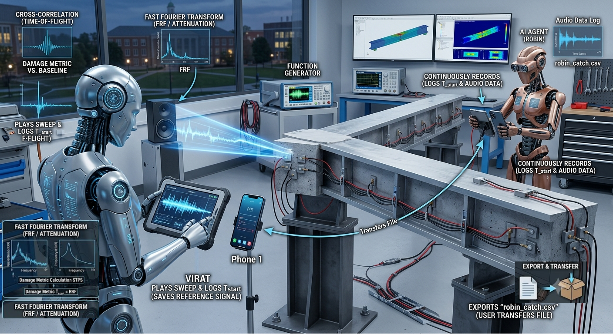

Transforming Off-the-Shelf Smartphones into High-Precision Signal Investigators for Large-Scale Structural Health Monitoring

Figure 1: Dual-Agent Autonomous Structural Health Monitoring Setup on a Bonded PZT Beam Assembly.
|
Agent 1: Virat
Phone 1 (Excitation & Analysis)
|
Agent 2: Robin
Phone 2 (Sensing & Data Export)
|
Sensor Interface
|
Signal Processing
|
Rural Infrastructure
|